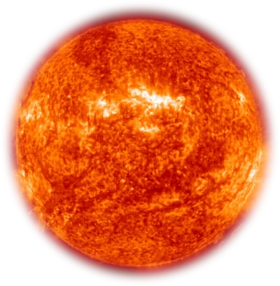

Nebulosas são grandes nuvens encontradas no espaço interestelar formadas, majoritariamente, de poeira cósmica e gases, como hélio e hidrogênio. Algumas nebulosas surgem a partir da explosão de estrelas massivas e que se encontram no ciclo final de suas vidas.
As nebulosas (nuvens formadas de poeira e gás) se contraem e formam uma esfera. Ao se contrair, o gás se concentra lentamente e aquece milhões de graus, num processo violento que pode levar milhões de anos. Assim, é formada uma protoestrela e, somente após atingir uma temperatura altíssima, têm início as reações nucleares das quais resultam as estrelas.
As constelações são um conjunto de estrelas que embora pareçam próximas a olho nu, estão extremamente distantes no espaço celeste.Dentre as principais constelações do universo vistas da Terra, as mais populares são:
O Cruzeiro do Sul (ou Crux) é a constelação mais conhecida das que podemos ver do hemisfério Sul, onde fica o Brasil. Ela é formada por cinco estrelas e seu eixo maior aponta para o polo sul celeste.
A Grande Ursa (Ursa Maior é um termo latino que significa "grande urso") está céu do norte e é uma constelação muito antiga, que já era conhecida pelos antigos egípcios. Ursa Menor é uma versão mais pequena e ténue da Ursa Maior, e é o lar da Estrela Polar. A constelação data da Antiguidade, e pensa-se que tenha sido introduzida pelo filósofo grego Thales de Miletus por volta de 600 AC.
Estrela cadente é o nome popular como é conhecido o meteoro. A estrela cadente resulta do lançamento de uma partícula sólida que se evapora. O resultado é um efeito luminoso. Quando visualizamos um rastro luminoso no céu durante a noite, podemos estar diante do fenômeno da estrela cadente. As estrelas cadentes são formadas por fragmentos advindos do espaço interplanetário que se aquecem no momento em que atingem a atmosfera.